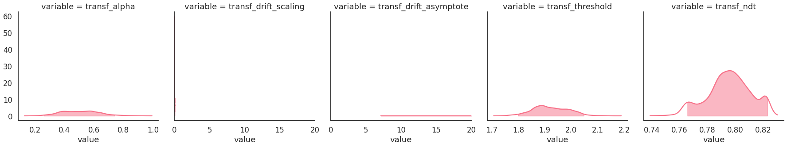
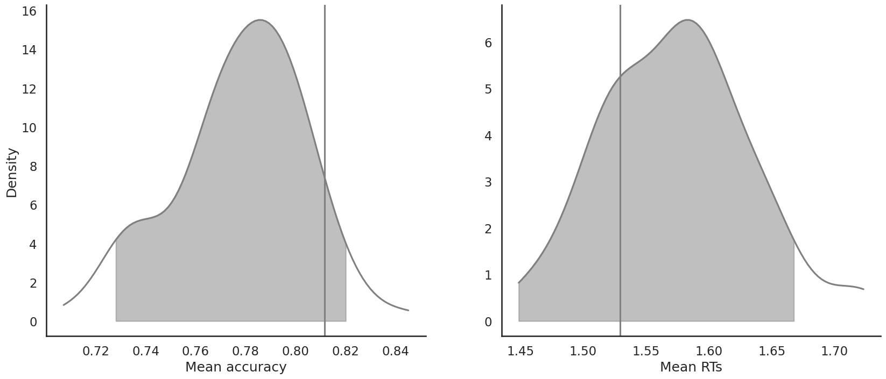
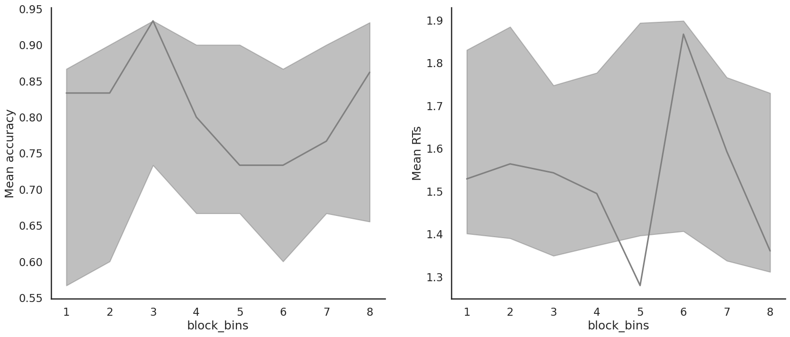
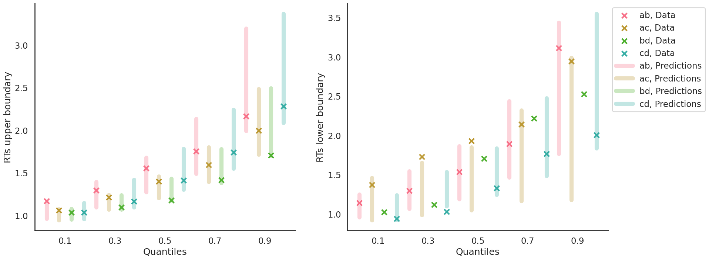

Fit the RLDDM on individual data
Import the data
[5]:
from rlssm.utility.load_data import load_example_dataset
# import some example data:
data = load_example_dataset(hierarchical_levels=1)
data.head()
[5]:
| participant | block_label | trial_block | f_cor | f_inc | cor_option | inc_option | times_seen | rt | accuracy | feedback_type | |
|---|---|---|---|---|---|---|---|---|---|---|---|
| 0 | 13 | 1 | 1 | 34 | 33 | 2 | 1 | 1 | 2.007335 | 1 | 0 |
| 1 | 13 | 1 | 2 | 46 | 39 | 2 | 1 | 2 | 1.573155 | 1 | 0 |
| 2 | 13 | 1 | 3 | 51 | 48 | 4 | 3 | 1 | 2.280624 | 1 | 0 |
| 3 | 13 | 1 | 4 | 54 | 36 | 4 | 2 | 2 | 1.195500 | 0 | 0 |
| 4 | 13 | 1 | 5 | 61 | 41 | 4 | 2 | 3 | 1.523336 | 1 | 0 |
Initialize the model
[6]:
from rlssm.model.models_DDM import RLDDModel
# you can "turn on and off" different mechanisms:
model = RLDDModel(hierarchical_levels=1,
separate_learning_rates=False,
threshold_modulation=False,
nonlinear_mapping=True)
Using cached StanModel
Fit
[7]:
# sampling parameters
n_warmup = 1000
n_sampling = 3000
n_chains = 2
# learning parameters
K = 4 # n options in a learning block (participants see 2 at a time)
initial_value_learning = 27.5 # initial learning value (Q0)
[8]:
model_fit = model.fit(
data,
K,
initial_value_learning,
iter_warmup=n_warmup,
iter_sampling=n_sampling,
chains=n_chains)
get Rhat
[9]:
model_fit.rhat
[9]:
| rhat | variable | |
|---|---|---|
| name | ||
| lp__ | 1.019240 | lp__ |
| alpha | 1.001380 | alpha |
| drift_scaling | 1.073000 | drift_scaling |
| drift_asymptote | 1.026370 | drift_asymptote |
| threshold | 1.005050 | threshold |
| ... | ... | ... |
| log_lik[235] | 1.001280 | log_lik[235] |
| log_lik[236] | 1.001700 | log_lik[236] |
| log_lik[237] | 0.999757 | log_lik[237] |
| log_lik[238] | 1.002340 | log_lik[238] |
| log_lik[239] | 1.023170 | log_lik[239] |
1691 rows × 2 columns
get wAIC
[10]:
model_fit.waic
[10]:
{'lppd': -229.20195840123006,
'p_waic': 4.971692736017802,
'waic': 468.34730227449575,
'waic_se': 35.75340770222775}
Posteriors
[11]:
model_fit.samples.describe()
[11]:
| transf_drift_asymptote | transf_threshold | transf_drift_scaling | transf_ndt | transf_alpha | |
|---|---|---|---|---|---|
| count | 6000.000000 | 6000.000000 | 6000.000000 | 6000.000000 | 6000.000000 |
| mean | 39.762068 | 1.922063 | 0.017025 | 0.795509 | 0.507405 |
| std | 28.755640 | 0.067054 | 0.013873 | 0.015706 | 0.127301 |
| min | 7.118410 | 1.706700 | 0.001853 | 0.738854 | 0.129663 |
| 25% | 15.366950 | 1.874637 | 0.006459 | 0.786445 | 0.408079 |
| 50% | 33.110800 | 1.916575 | 0.011127 | 0.795969 | 0.505730 |
| 75% | 56.444175 | 1.972433 | 0.024621 | 0.806053 | 0.592034 |
| max | 167.226000 | 2.189460 | 0.055257 | 0.830424 | 0.993353 |
[12]:
import seaborn as sns
sns.set(context="talk",
style="white",
palette="husl",
rc={'figure.figsize': (15, 8)})
[13]:
g = model_fit.plot_posteriors(height=5, show_intervals='HDI')
g.axes.flat[1].set_xlim(0, 20)
g.axes.flat[2].set_xlim(0, 20)
[13]:
(0.0, 20.0)

Posterior predictives
Ungrouped
[14]:
pp = model_fit.get_posterior_predictives_df(n_posterior_predictives=100)
pp
[14]:
| variable | rt | ... | accuracy | ||||||||||||||||||
|---|---|---|---|---|---|---|---|---|---|---|---|---|---|---|---|---|---|---|---|---|---|
| trial | 1 | 2 | 3 | 4 | 5 | 6 | 7 | 8 | 9 | 10 | ... | 230 | 231 | 232 | 233 | 234 | 235 | 236 | 237 | 238 | 239 |
| sample | |||||||||||||||||||||
| 1 | 1.180147 | 1.204147 | 1.878147 | 1.175147 | 1.589147 | 1.559147 | 1.078147 | 1.177147 | 1.383147 | 2.436147 | ... | 1.0 | 1.0 | 1.0 | 1.0 | 1.0 | 1.0 | 1.0 | 1.0 | 1.0 | 1.0 |
| 2 | 1.507921 | 0.918921 | 1.152921 | 1.560921 | 1.116921 | 1.206921 | 1.181921 | 1.491921 | 1.316921 | 1.850921 | ... | 1.0 | 1.0 | 0.0 | 1.0 | 1.0 | 1.0 | 0.0 | 1.0 | 1.0 | 1.0 |
| 3 | 1.938010 | 1.726010 | 1.786010 | 2.555010 | 2.019010 | 1.021010 | 1.840010 | 1.090010 | 1.280010 | 1.033010 | ... | 1.0 | 1.0 | 1.0 | 0.0 | 1.0 | 1.0 | 0.0 | 1.0 | 1.0 | 1.0 |
| 4 | 0.988321 | 1.131321 | 1.117321 | 2.420321 | 1.233321 | 4.436321 | 1.411321 | 1.246321 | 0.955321 | 1.826321 | ... | 1.0 | 1.0 | 0.0 | 0.0 | 1.0 | 1.0 | 1.0 | 1.0 | 0.0 | 1.0 |
| 5 | 1.274819 | 1.823819 | 1.142819 | 1.550819 | 1.036819 | 2.181819 | 1.514819 | 1.679819 | 0.981819 | 2.947819 | ... | 0.0 | 1.0 | 1.0 | 0.0 | 1.0 | 1.0 | 0.0 | 1.0 | 1.0 | 1.0 |
| ... | ... | ... | ... | ... | ... | ... | ... | ... | ... | ... | ... | ... | ... | ... | ... | ... | ... | ... | ... | ... | ... |
| 96 | 1.904535 | 0.938535 | 1.021535 | 1.197535 | 1.464535 | 2.337535 | 1.229535 | 2.261535 | 1.010535 | 1.399535 | ... | 0.0 | 1.0 | 1.0 | 1.0 | 1.0 | 0.0 | 1.0 | 1.0 | 1.0 | 1.0 |
| 97 | 1.661215 | 1.897215 | 1.696215 | 2.095215 | 1.308215 | 2.489215 | 1.789215 | 1.059215 | 2.617215 | 2.200215 | ... | 1.0 | 1.0 | 1.0 | 1.0 | 1.0 | 1.0 | 1.0 | 1.0 | 1.0 | 1.0 |
| 98 | 1.528200 | 1.646200 | 1.903200 | 1.018200 | 1.339200 | 1.188200 | 0.945200 | 1.242200 | 1.553200 | 1.097200 | ... | 1.0 | 1.0 | 1.0 | 1.0 | 1.0 | 1.0 | 1.0 | 1.0 | 1.0 | 1.0 |
| 99 | 4.184392 | 2.371392 | 1.074392 | 2.011392 | 0.960392 | 1.931392 | 1.580392 | 1.216392 | 1.147392 | 2.170392 | ... | 1.0 | 1.0 | 1.0 | 1.0 | 1.0 | 1.0 | 1.0 | 1.0 | 1.0 | 1.0 |
| 100 | 1.667131 | 2.014131 | 1.527131 | 1.040131 | 1.841131 | 1.917131 | 1.517131 | 1.292131 | 2.281131 | 1.325131 | ... | 1.0 | 1.0 | 0.0 | 1.0 | 1.0 | 1.0 | 0.0 | 1.0 | 1.0 | 1.0 |
100 rows × 478 columns
[15]:
pp_summary = model_fit.get_posterior_predictives_summary(n_posterior_predictives=100)
pp_summary
[15]:
| mean_accuracy | mean_rt | skewness | quant_10_rt_low | quant_30_rt_low | quant_50_rt_low | quant_70_rt_low | quant_90_rt_low | quant_10_rt_up | quant_30_rt_up | quant_50_rt_up | quant_70_rt_up | quant_90_rt_up | |
|---|---|---|---|---|---|---|---|---|---|---|---|---|---|
| sample | |||||||||||||
| 1 | 0.732218 | 1.579967 | 1.909545 | 1.031547 | 1.138847 | 1.384147 | 1.568047 | 2.859647 | 0.970947 | 1.131147 | 1.345147 | 1.705347 | 2.481947 |
| 2 | 0.807531 | 1.481524 | 1.484929 | 0.976421 | 1.148921 | 1.406921 | 1.775421 | 2.131921 | 1.025321 | 1.130321 | 1.274921 | 1.606721 | 2.188721 |
| 3 | 0.807531 | 1.565223 | 1.966920 | 0.992510 | 1.146010 | 1.355010 | 1.752010 | 2.139010 | 1.038210 | 1.213210 | 1.392010 | 1.734410 | 2.349210 |
| 4 | 0.774059 | 1.559166 | 1.845887 | 1.016221 | 1.221421 | 1.339321 | 1.750021 | 2.204621 | 0.997921 | 1.232121 | 1.411321 | 1.716521 | 2.327921 |
| 5 | 0.786611 | 1.624401 | 1.436980 | 1.064819 | 1.290819 | 1.486819 | 1.821819 | 2.451819 | 1.006819 | 1.192119 | 1.409819 | 1.675619 | 2.554219 |
| ... | ... | ... | ... | ... | ... | ... | ... | ... | ... | ... | ... | ... | ... |
| 96 | 0.748954 | 1.543129 | 2.470084 | 1.029335 | 1.221335 | 1.592535 | 1.895335 | 2.518835 | 1.000535 | 1.159335 | 1.336535 | 1.549935 | 2.094935 |
| 97 | 0.803347 | 1.563571 | 2.210872 | 1.099415 | 1.273015 | 1.515215 | 1.670415 | 2.145015 | 1.041415 | 1.233415 | 1.397215 | 1.682915 | 2.300115 |
| 98 | 0.803347 | 1.511803 | 2.565248 | 1.128600 | 1.244600 | 1.451200 | 1.939000 | 2.291000 | 1.005900 | 1.149500 | 1.318200 | 1.579700 | 2.101800 |
| 99 | 0.811715 | 1.536107 | 2.547361 | 1.038592 | 1.219792 | 1.489392 | 1.790592 | 2.246792 | 1.005992 | 1.179492 | 1.334392 | 1.624392 | 2.208592 |
| 100 | 0.815900 | 1.554575 | 2.500850 | 0.991331 | 1.275331 | 1.641631 | 1.820631 | 2.469731 | 0.999931 | 1.121731 | 1.293131 | 1.647531 | 2.194731 |
100 rows × 13 columns
[16]:
model_fit.plot_mean_posterior_predictives(n_posterior_predictives=100, figsize=(20, 8), show_intervals='HDI')
[16]:


[17]:
model_fit.plot_quantiles_posterior_predictives(n_posterior_predictives=100, kind='shades')
[17]:


Grouped
[18]:
import numpy as np
import pandas as pd
# Define new grouping variables, in this case, for the different choice pairs, but any grouping var can do
data['choice_pair'] = 'AB'
data.loc[(data.cor_option == 3) & (data.inc_option == 1), 'choice_pair'] = 'AC'
data.loc[(data.cor_option == 4) & (data.inc_option == 2), 'choice_pair'] = 'BD'
data.loc[(data.cor_option == 4) & (data.inc_option == 3), 'choice_pair'] = 'CD'
data['block_bins'] = pd.cut(data.trial_block, 8, labels=np.arange(1, 9))
[19]:
model_fit.get_grouped_posterior_predictives_summary(
grouping_vars=['block_label', 'choice_pair'],
quantiles=[.3, .5, .7],
n_posterior_predictives=100)
[19]:
| mean_accuracy | mean_rt | skewness | quant_30_rt_low | quant_30_rt_up | quant_50_rt_low | quant_50_rt_up | quant_70_rt_low | quant_70_rt_up | |||
|---|---|---|---|---|---|---|---|---|---|---|---|
| block_label | choice_pair | sample | |||||||||
| 1 | AB | 1 | 0.50 | 1.566747 | 1.098413 | 1.215347 | 1.169447 | 1.457647 | 1.429147 | 1.614847 | 1.848647 |
| 2 | 0.85 | 1.760671 | 1.483943 | 1.373321 | 1.331521 | 1.668921 | 1.492921 | 2.041721 | 2.025521 | ||
| 3 | 0.65 | 1.463610 | 0.416334 | 1.293810 | 1.309610 | 1.391010 | 1.394010 | 1.578010 | 1.585210 | ||
| 4 | 0.50 | 1.718621 | 0.859416 | 1.217321 | 1.575421 | 1.351821 | 1.845321 | 1.898121 | 2.265221 | ||
| 5 | 0.75 | 1.645819 | -0.008604 | 1.502819 | 1.233419 | 2.150819 | 1.561819 | 2.194019 | 1.810819 | ||
| ... | ... | ... | ... | ... | ... | ... | ... | ... | ... | ... | ... |
| 3 | CD | 96 | 0.75 | 1.615885 | 1.044242 | 1.231535 | 1.279935 | 1.383535 | 1.505535 | 1.454735 | 1.856935 |
| 97 | 0.80 | 1.974265 | 1.534582 | 1.847215 | 1.243215 | 2.602215 | 1.579215 | 3.471315 | 1.932215 | ||
| 98 | 0.80 | 1.655000 | 3.105331 | 1.041300 | 1.118700 | 1.154700 | 1.414200 | 1.337700 | 1.927200 | ||
| 99 | 0.55 | 1.608842 | 1.077797 | 1.303992 | 1.224392 | 1.713392 | 1.315392 | 2.062792 | 1.542392 | ||
| 100 | 0.70 | 1.824131 | 1.847080 | 1.526631 | 1.206731 | 1.970131 | 1.370131 | 2.361131 | 1.673231 |
1200 rows × 9 columns
[20]:
model_fit.get_grouped_posterior_predictives_summary(
grouping_vars=['block_bins'],
quantiles=[.3, .5, .7],
n_posterior_predictives=100)
[20]:
| mean_accuracy | mean_rt | skewness | quant_30_rt_low | quant_30_rt_up | quant_50_rt_low | quant_50_rt_up | quant_70_rt_low | quant_70_rt_up | ||
|---|---|---|---|---|---|---|---|---|---|---|
| block_bins | sample | |||||||||
| 1 | 1 | 0.733333 | 1.394214 | 2.832000 | 0.998247 | 1.128947 | 1.246147 | 1.216647 | 1.422047 | 1.445547 |
| 2 | 0.700000 | 1.669521 | 1.068057 | 1.200521 | 1.234921 | 1.294921 | 1.702921 | 1.555121 | 2.120921 | |
| 3 | 0.566667 | 2.003310 | 2.160262 | 1.440010 | 1.373010 | 1.662010 | 1.988010 | 2.322010 | 2.131010 | |
| 4 | 0.700000 | 1.484621 | 0.756353 | 1.243121 | 1.186321 | 1.379321 | 1.454321 | 1.549921 | 1.821321 | |
| 5 | 0.900000 | 1.768052 | 2.872987 | 1.336819 | 1.233019 | 1.472819 | 1.371819 | 1.821619 | 1.711419 | |
| ... | ... | ... | ... | ... | ... | ... | ... | ... | ... | ... |
| 8 | 96 | 0.862069 | 1.457190 | 0.536524 | 1.207735 | 1.115335 | 1.411035 | 1.437535 | 1.650035 | 1.610535 |
| 97 | 0.793103 | 1.615491 | 1.531496 | 1.284715 | 1.253215 | 1.398215 | 1.527215 | 1.448215 | 1.722215 | |
| 98 | 0.862069 | 1.319890 | 1.427118 | 1.321200 | 1.081200 | 1.446200 | 1.221200 | 1.585700 | 1.430600 | |
| 99 | 0.862069 | 1.384116 | 1.605039 | 1.189592 | 1.104992 | 1.369892 | 1.250392 | 1.665292 | 1.477392 | |
| 100 | 0.827586 | 1.406786 | 1.157022 | 1.260531 | 1.110131 | 1.386131 | 1.242131 | 1.653331 | 1.463431 |
800 rows × 9 columns
[21]:
model_fit.plot_mean_grouped_posterior_predictives(grouping_vars=['block_bins'],
n_posterior_predictives=100,
figsize=(20, 8))
[21]:


[22]:
model_fit.plot_quantiles_grouped_posterior_predictives(n_posterior_predictives=100,
grouping_var='choice_pair',
kind='shades',
quantiles=[.1, .3, .5, .7, .9])
[22]:


[23]:
model_fit.plot_quantiles_grouped_posterior_predictives(
n_posterior_predictives=300,
grouping_var='choice_pair',
palette=sns.color_palette('husl'),
intervals_kws={'alpha': .3, 'lw': 8},
hue_order=['AB', 'AC', 'BD', 'CD'],
hue_labels=['ab', 'ac', 'bd', 'cd'])
[23]:

